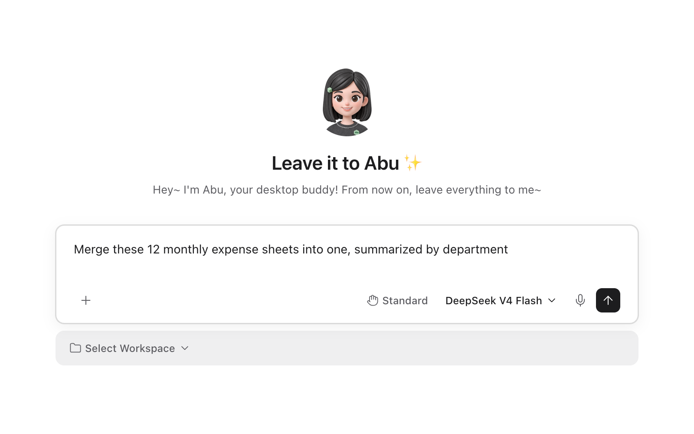
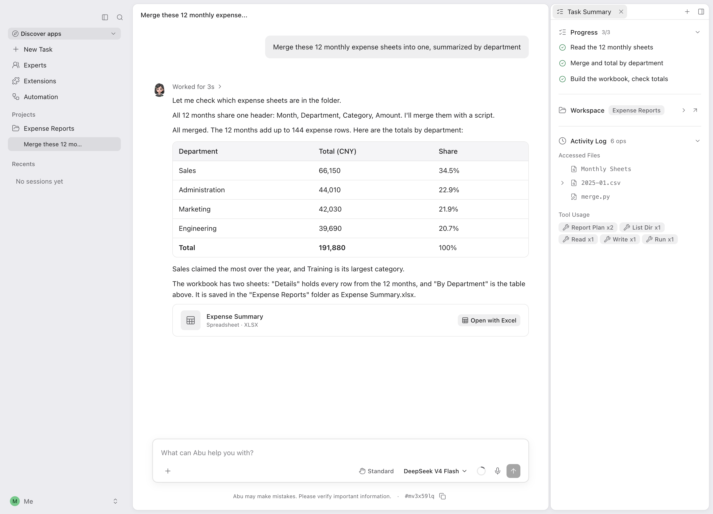
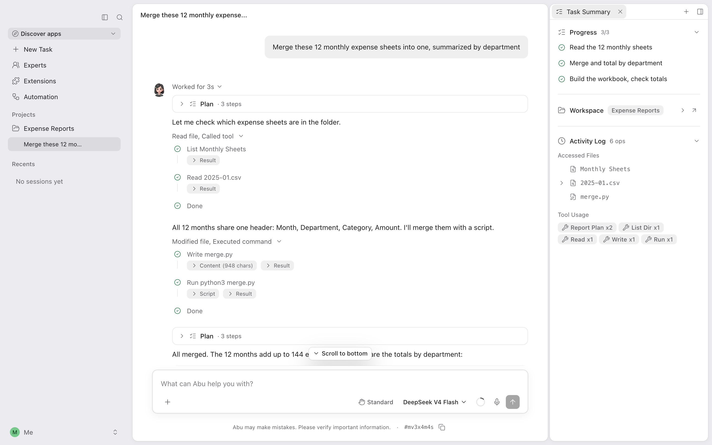
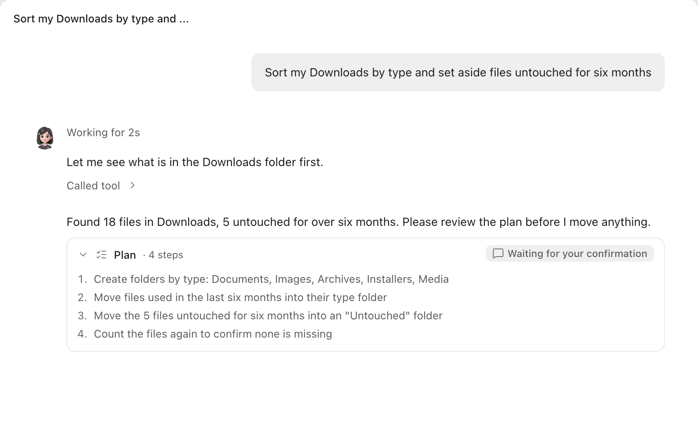
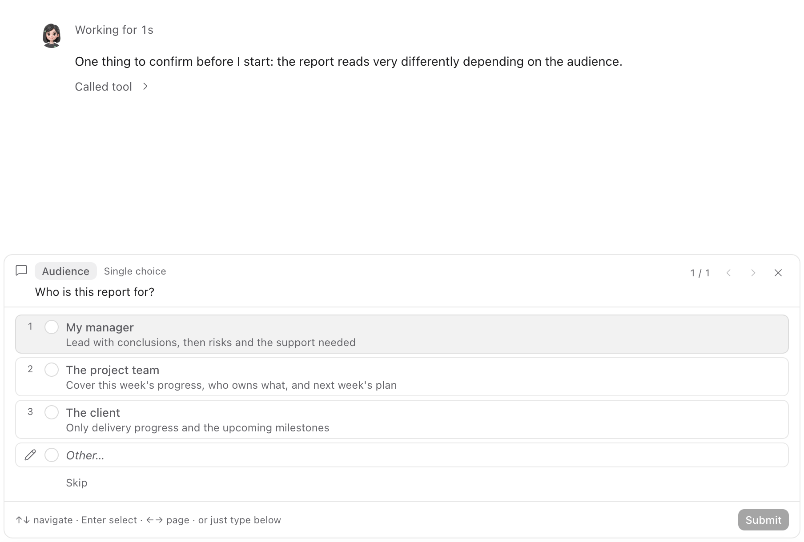
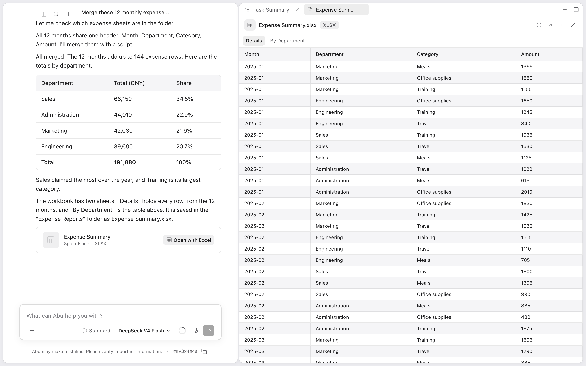
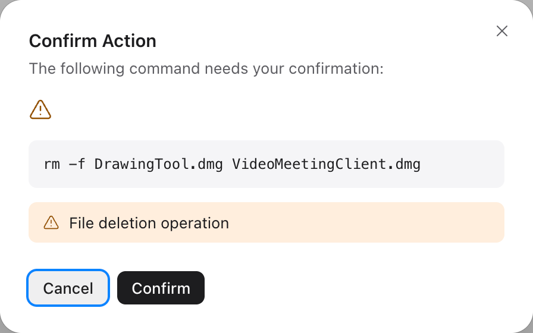

1
Say only the result you want
Write one sentence, the way you would brief a colleague: what to do, which materials to use, which file you want at the end. Abu plans the steps itself.

Say what you need. Abu reads files, opens the browser and operates apps on your computer, then hands you the finished file.

Every file Abu read and every command it ran stays in the conversation.

Write one sentence, the way you would brief a colleague: what to do, which materials to use, which file you want at the end. Abu plans the steps itself.

When a job involves deleting, overwriting, sending or installing, Abu lists every step. It starts only after you approve.

When information is missing, Abu does not guess. It shows a few options; you click one and it carries on.

Spreadsheets, documents and slide decks are saved in the folder you chose, ready to open. The files Abu read and the commands it ran are all in the conversation.

Abu plans the steps, reads files, runs commands and writes the result. You do not have to direct it step by step.
Built-in skills cover Office documents, design, web browsing and development. Install skills others have made, or write your own.
For software without an API, Abu watches the screen and works the mouse and keyboard for you.
Abu uses these services through the MCP standard: it queries data, creates pages and files issues directly.
Set a time and Abu starts on its own. It can also start when a file changes or an IM message arrives. Abu must be running and the computer awake.
After finishing a complex workflow, Abu offers to save it as a skill and writes the draft. Once you approve it, one sentence runs it again.
A product manager, an engineer, a designer and a tester each take a part, work in parallel and merge their work into one result.
Abu lists a step-by-step plan first and starts only when you click Confirm. While it waits, it reads and changes nothing.
When a decision is yours, Abu shows a card of options above the input box. Cards support single and multiple choice, and you can type your own answer.
These are sample use cases
Abu works really well. I've already built a custom calendar printing site with it
Light and fast, and it feels natural to use
Abu has helped our company deliver several projects
You can get hands-on and change the code yourself
I often recommend Abu to my clients
Really well-built software!
One person built Abu. Incredible
Thank you, it's a great tool
Translated from users' messages in Chinese
Abu runs on your computer. Which folders it may open and which actions need your approval are yours to decide.
Conversations, files and model keys are all stored on this machine.
To write outside the folders you chose, Abu needs your consent first.
Before deleting, overwriting or sending, Abu stops and waits for your confirmation.
All of Abu's code is open source on GitHub.

The Abu server on Discord is where English-speaking users ask questions and suggest features. On WeChat, scan the QR code on the right to add Shawn, Abu's author, with the note “Abu”.

· After installing, set up a model, pick a folder and tell Abu what you need
Need help? Ask on the Abu Discord →